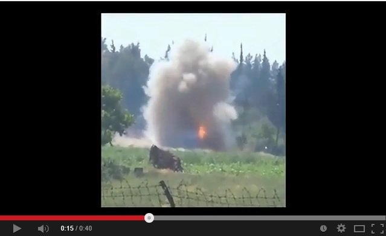

Видео из Сирии представляется как действия донецких «ополченцев»
В Сети активно распространяется видеосюжет под заголовком «28 05 2014 Донецк ополченцы взорвали ЗРК террористов (украинской нацгвардии)».

Однако это видео было снято не в Донецке, а в Сирии.Оно было опубликовано 15 мая 2014 года.
https://www.youtube.com/watch?v=apsgxqTygQY
На оригинальном видео отчетливо слышны выкрики «Аллах акбар!».
Posted On: 2014-05-28T21:00:00
Content Date: 2014-05-28
Download Date: 2021-07-16
Document ID: L0C04FCIJ